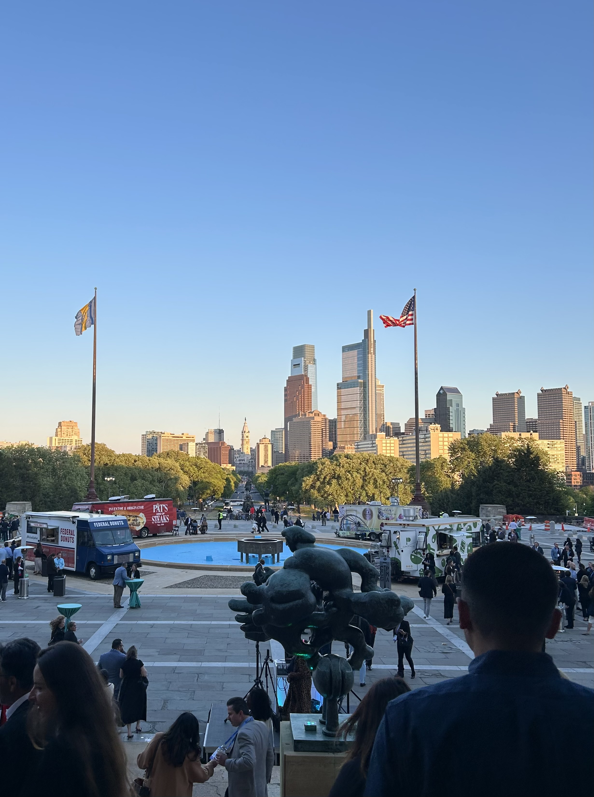
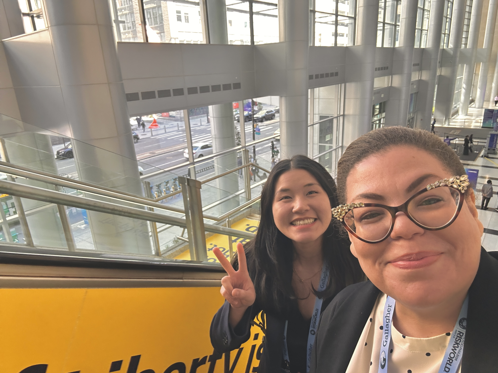
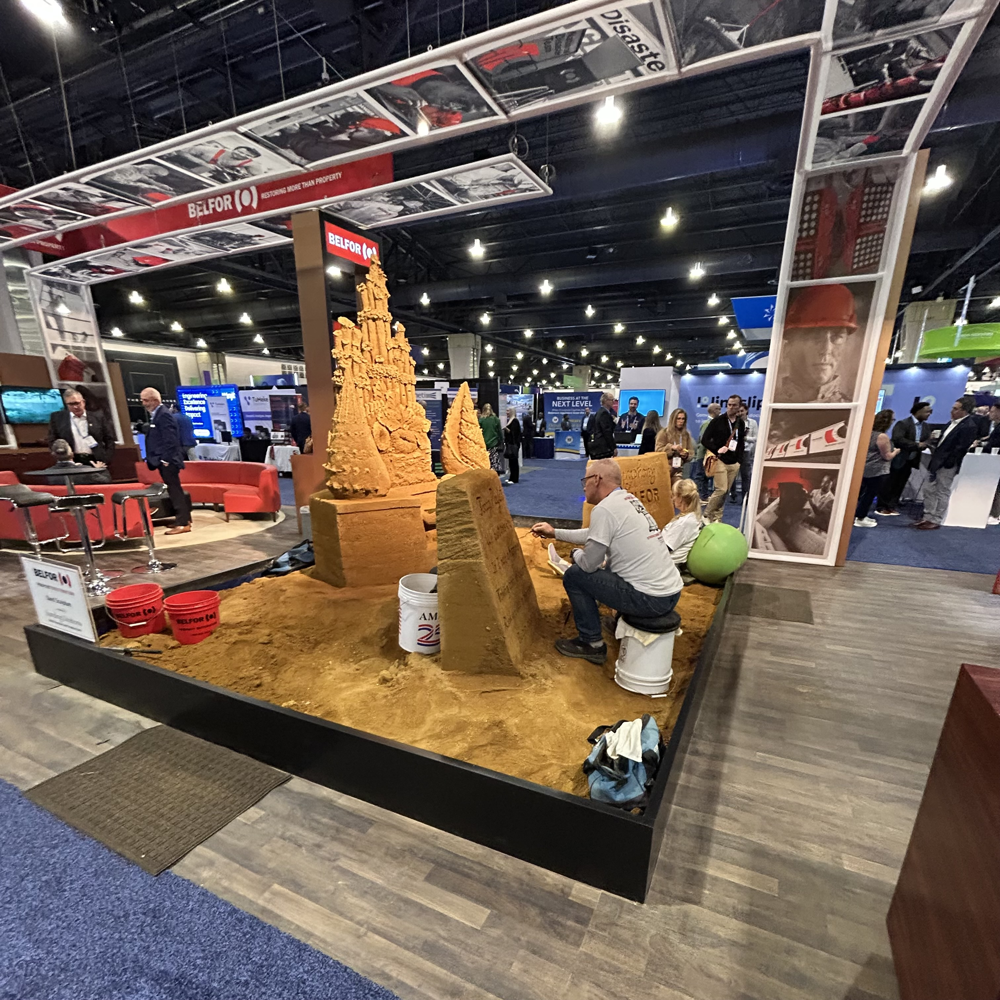
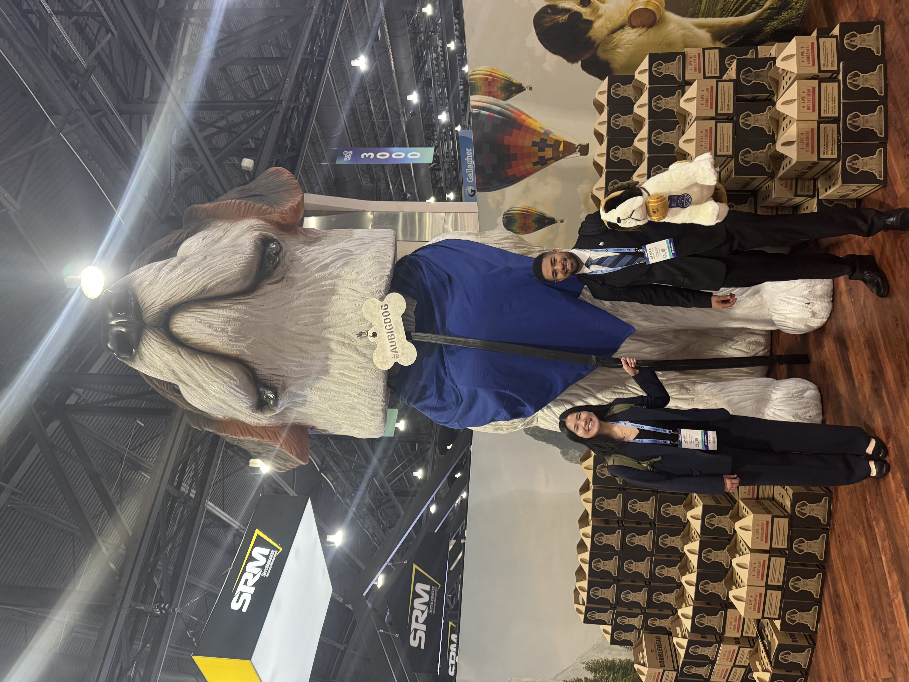
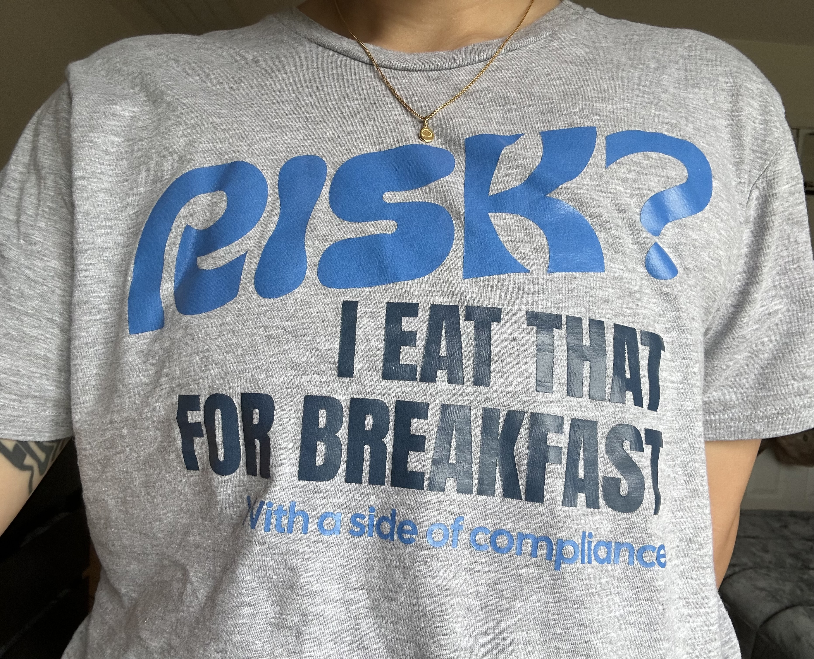

Stepping into RISKWORLD 2026
Earlier this month, I had the opportunity to attend RISKWORLD 2026 in Philadelphia with my professor and fellow students from Georgia State’s Greenberg School of Risk Science. RISKWORLD is an annual 4-day conference hosted by the Risk & Insurance Management Society (RIMS) that brings together professionals and students across the risk management and insurance industry. Leading up to the event, I wasn’t sure what to expect as it was my first professional conference. Truthfully, I was a little nervous, but I was also curious and excited about what it would entail.
Seeing the Industry Up Close
Before the conference officially began, my classmates and I attended the Anita Benedetti Student Involvement Program (ABSIP) and Student Welcome Reception, followed by the RISKWORLD Opening Reception. Both events really pushed me out of my comfort zone, and it helped me ease into the conference without feeling overwhelmed. I loved speaking with students and risk professionals present, and it was inspiring to hear about their passions for the risk management & insurance (RMI) industry. The Philadelphia Museum of Art was a beautiful venue for the opening reception. It created a relaxed atmosphere for networking and gave me a glimpse of how welcoming the industry is.

Walking into the Pennsylvania Convention Center and arriving at the marketplace made me realize the scale of RISKWORLD was beyond anything I imagined. Each participating company had their own booth and presence. I even saw a Belfor booth with their very own sandcastle display! Walking through the marketplace, it was exciting to see the variety of companies represented. It showed me how broad the risk and insurance industry is.


With my calendar in hand, I had my day planned. First on my priority list were the educational sessions. RISKWORLD held dozens of these sessions each day, led by volunteer risk and insurance professionals. Sessions covered a variety of topics such as global risk, artificial intelligence, and insurance. I was particularly interested in hearing about sessions that centered around cyber but from an insurance perspective. If I was in the early years of my undergraduate studies, I would wonder, “Why would insurance companies have to deal with cybersecurity?” Those sessions made it evident that cyber risk is no longer just a technical issue. It is also a business issue. Threat actors are seeking to exploit dependencies within organizations that can disrupt operations, revenue, and damage client or customer relationships. Any company with assets that are crucial to its operations and continuity is a potential target.
One of the most memorable conversations I had that day was with the ISACA representatives. ISACA is a professional association widely known for its certification programs and frameworks for overseeing IT systems. As an Information Systems student interested in IT audit and risk, seeing the ISACA booth felt like seeing a celebrity in the wild haha! In all honesty, I was ecstatic to see their booth, and I had many questions about their certification programs, especially since one of my long-term goals is to become an IT auditor. The representatives I spoke with were so incredibly sweet. My interaction with them made me feel confident and even proud of the career path that I hope to pursue.
Culture of the RMI Industry
Through my professor’s coordination, my peers and I had the opportunity to meet with professionals from Liberty Mutual, Lloyd’s of London, and Chubb. With each conversation, I enjoyed hearing how each professional found their place in the industry. What left the strongest impression on me was the strong emphasis on building relationships and uplifting one another within the industry. I admired how intentional the professionals were about investing in students and creating space for us to learn and ask questions.
Something I commonly observed in conversations with both industry professionals and students was a culture of supporting and uplifting one another. Career development is not only shaped by your technical ability, but also by the efforts you make to connect with people, maintain relationships, and stay open to learning.

What I Took Away from RISKWORLD
Risk is a part of every business and every single industry. Although I’m not pursuing a career in insurance, this experience has allowed me to see how connected business, insurance, risk, and technology truly are. Learning about risk in the classroom is one thing, but having the opportunity to see the type of companies, roles, and professionals involved firsthand, and having the chance to speak with them directly, is a type of learning that can’t be replicated. I deeply admire the culture that is nurtured by professionals and students alike, and I’m happy to have left the conference with a greater appreciation for the RMI industry. More than anything, this experience has reminded me that growth comes from the courage to step outside your comfort zone and a willingness to learn from those around you. In addition to all of this, I was able to take home my new favorite shirt and a suitcase full of freebies!

I would like to thank Professor Weston and the Maurice R. Greenberg School of Risk Science for inviting me to attend and for continuing to provide opportunities for students to learn outside the classroom. This experience was priceless, and for my first-ever conference, I’m glad it was RISKWORLD! I also want to thank my classmates, Jasmin, Wale, and Braden. They are all incredibly bright and ambitious students, and I feel fortunate to have shared this experience with them.